Weiße Rosen
Ort 01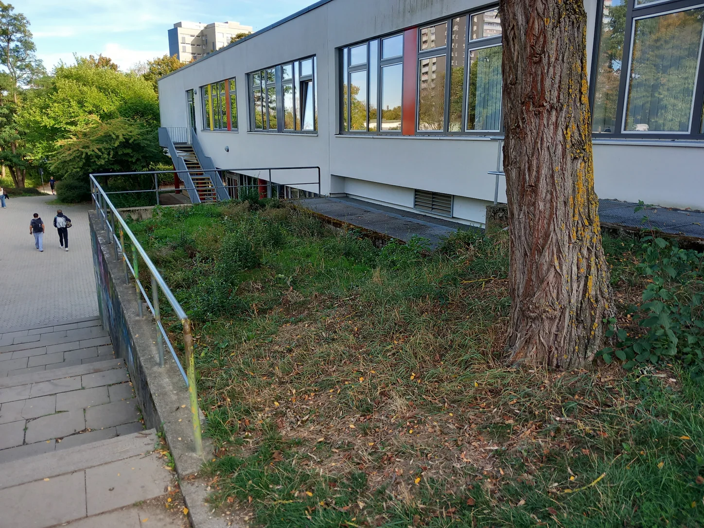
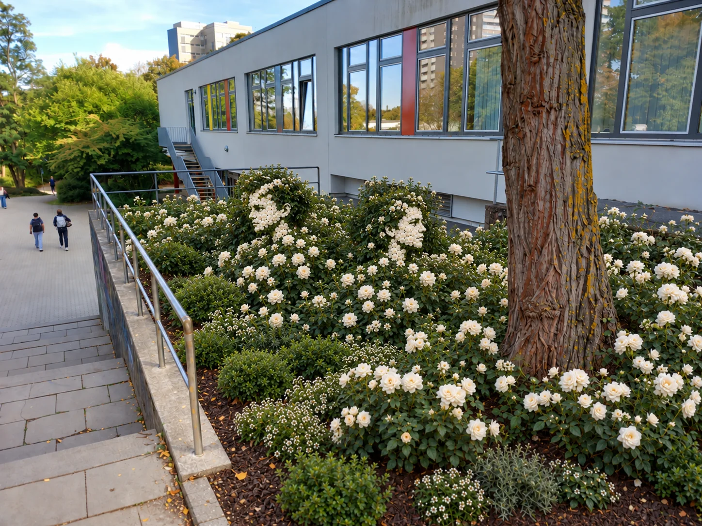
Eine bislang wenig gestaltete Fläche wird als üppiges Beet mit weißen Rosen gedacht.
Sechs Orte an der GSS, heute und als mögliche grüne Zukunft.
Wie könnten einzelne Bereiche unserer Schule grüner, schattiger und lebenswerter werden? Die Bildpaare zeigen den heutigen Zustand und jeweils eine mögliche Gestaltung. Die Zukunftsbilder sind KI-generierte Visualisierungen und dienen als Ideenskizzen – nicht als fertige Planung.


Eine bislang wenig gestaltete Fläche wird als üppiges Beet mit weißen Rosen gedacht.
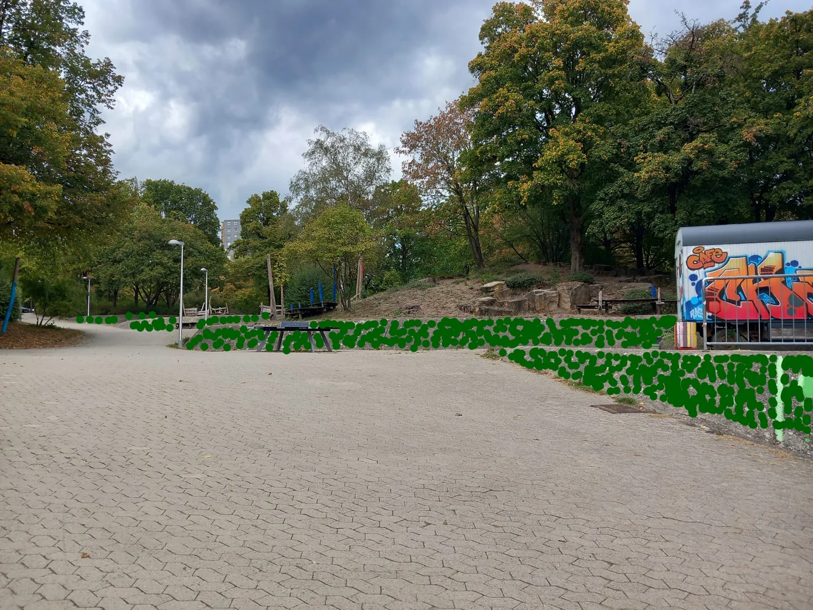
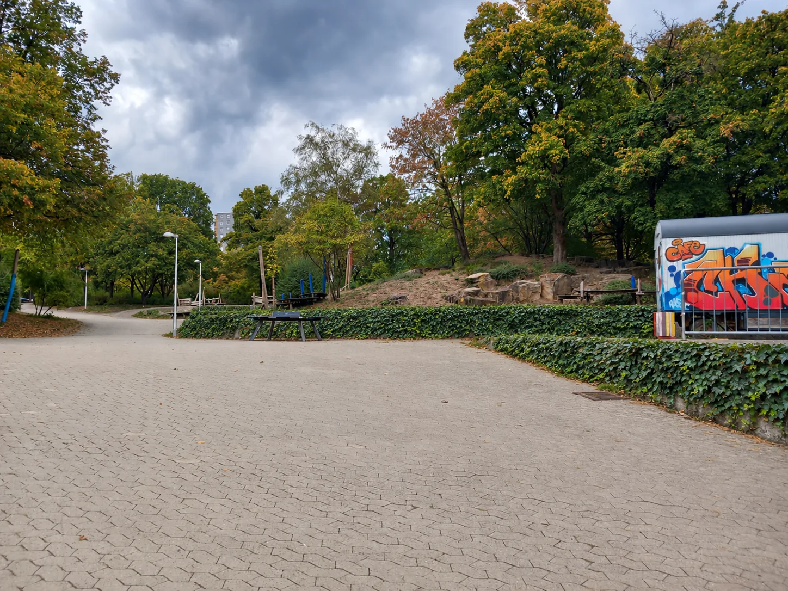
Robuste Begrünung könnte harte Betonflächen in das vorhandene Grün einbinden.
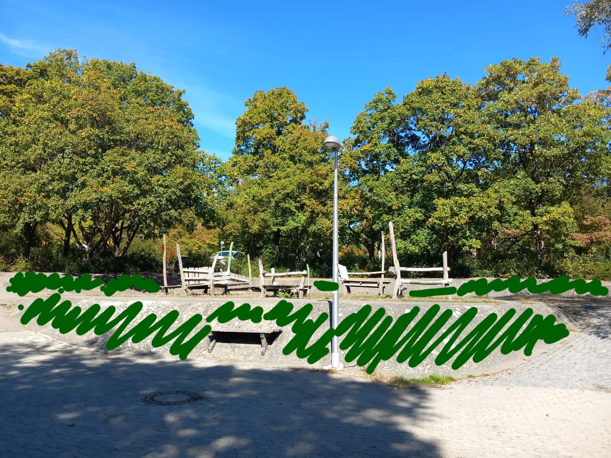
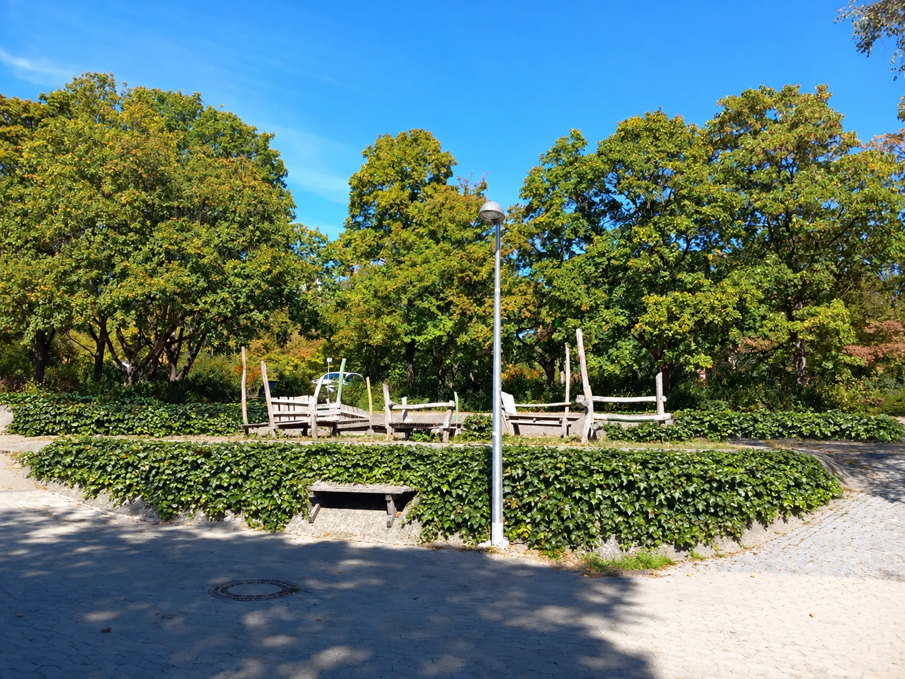
Eine zusammenhängende Begrünung kann die Böschung ruhiger, natürlicher und geschlossener wirken lassen.
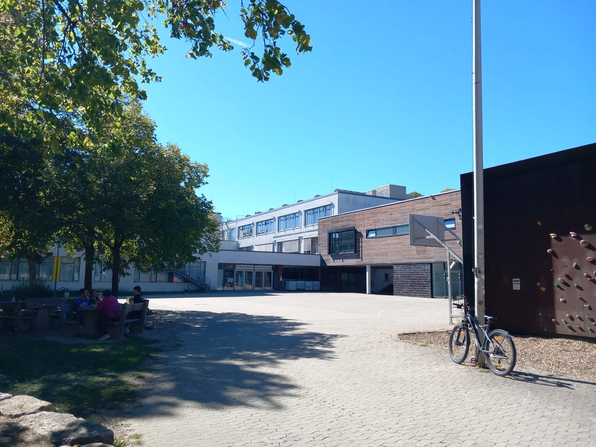
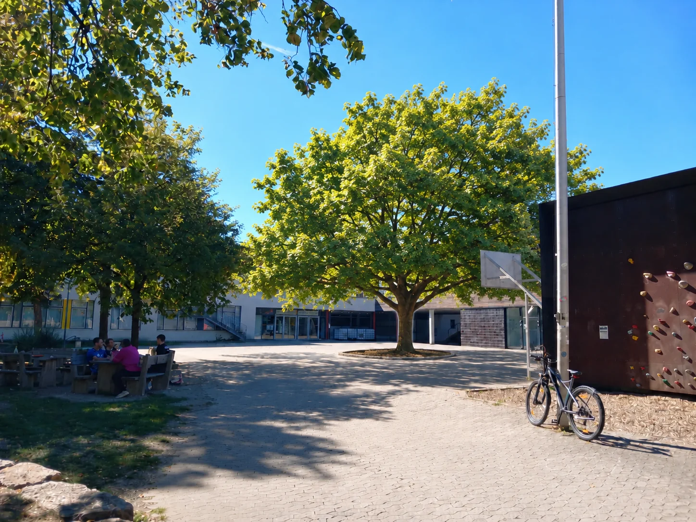
Ein zusätzlicher Baum könnte an warmen Tagen Schatten spenden und die versiegelte Fläche räumlich gliedern.
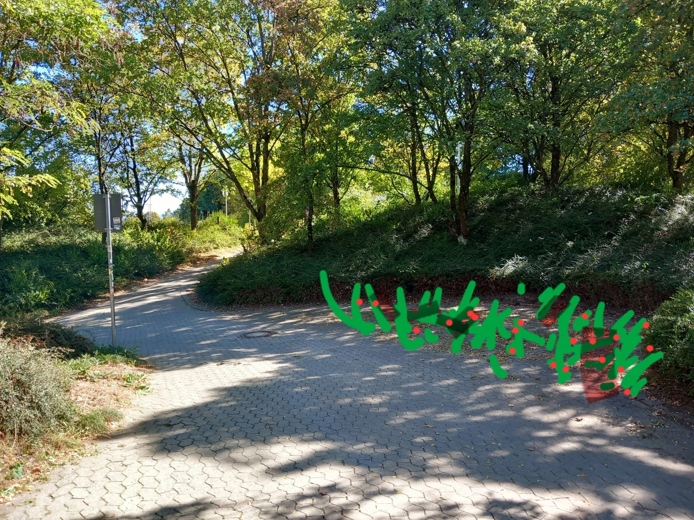
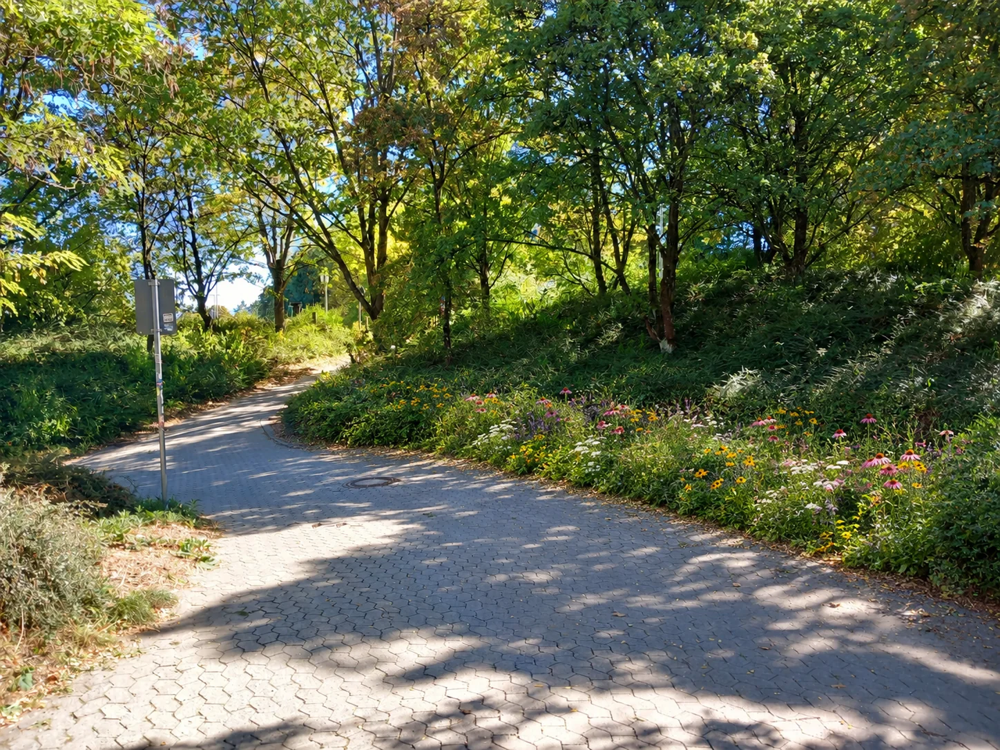
Blühende Stauden und Wiesenpflanzen könnten mehr Farbe und zusätzliche Lebensräume für Insekten schaffen.
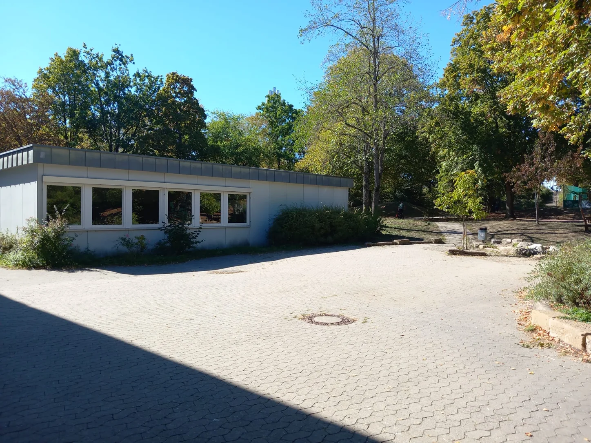
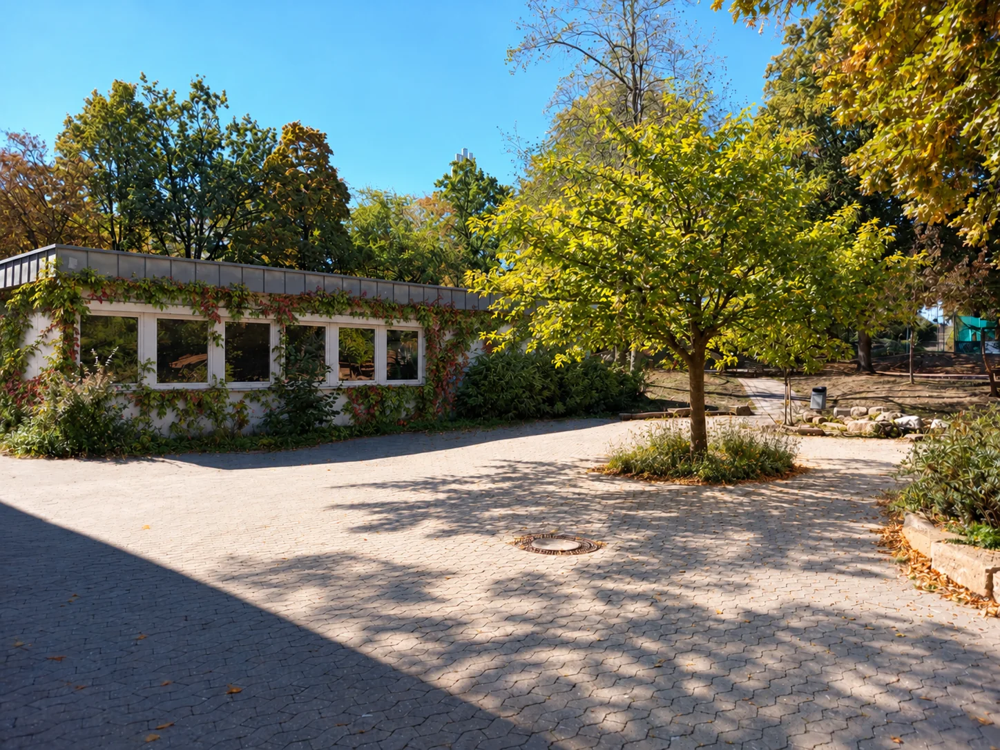
Baum und Fassadenbegrünung verbinden Schatten, Vegetation und eine sichtbar grünere Gebäudefassade.
Die Visualisierungen zeigen Möglichkeiten – keine fertigen Planungen. Sie sollen Ideen für mehr Grün, Schatten, Biodiversität und Aufenthaltsqualität an der GSS sichtbar machen und zur Diskussion einladen.